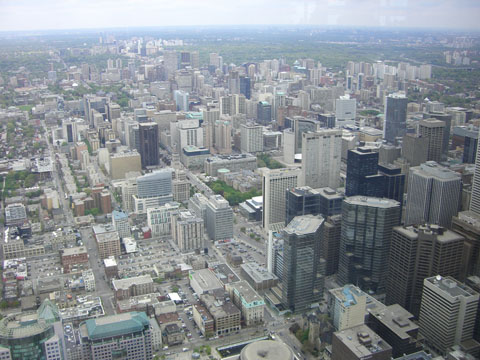

canada
toronto

toronto, another big north american city.
one of it's famous landmarks is the huge cn tower. it's got a cool glass floor you can jump up and down on.
in the bay right next toronto is an amazing tree covered car free island with lots of bike paths and stuff.
here's ren on said island; a great get away for city goers
niagra falls
a few hours south of toronto are niagra falls. as with most famous places we were not the only people about.
we went on the popular maid-of-the-mist ride up to the base of the falls. it was remarkable the noise and, as the name would suggest, the mist.
the falls are even lit up at night, bit spooky really.
while there we decided to open a restaurant but as always they spelt kelcey wrong!
calgary
on the other side of canada is calgary, a pleasant city not too far from the rockies
they even have couches on the street. (look carefully, those bricks aren't painted on)
they even have beavers, and they actually do eat through trees.
calgary has a very simple street naming scheme. avenues runs north/south, streets run east/west. this photo was taken 12 streets to the west of center street and 13 avenues south of the river. very simple, why aren't all places like this?
banff
banff is one of the closest towns to calgary in the rockies.
quite a bit of wild life...
...both big and small
classic views!